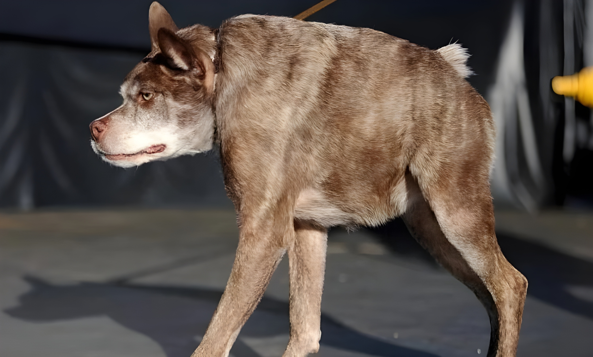

Local Dog with Two Dicks: A Bizarre Medical Anomaly
A stray dog recently discovered in a quiet suburban neighborhood has stunned both locals and scientists with its unusual anatomy – the animal sports two fully formed dicks. Report by The New York Times
Article Information
- February 17, 2025
Background
SUBURBAN, USA — Early Tuesday morning, residents in a quiet neighborhood were shocked to witness an extraordinary sight: a stray dog exhibiting a rare congenital condition. The animal was found near a local park with not one, but two distinct dicks – a phenomenon scarcely documented in canines.
Local veterinarians and animal experts have been quick to examine the case. Preliminary assessments suggest that a genetic mutation during fetal development may have led to this dual anatomy. Despite its unusual condition, the dog appears healthy and unbothered.
"This is an unprecedented case in our practice," stated Dr. Reyes, a leading veterinary specialist. "We are eager to conduct further tests to understand the genetic and developmental factors at play."
Animal welfare agencies and local authorities emphasize that while the discovery is extraordinary, there is no cause for alarm. The dog is receiving proper care, and experts hope the case will shed light on rare congenital anomalies in animals.
Investigation Details
On Tuesday, following the initial discovery, local veterinarians performed a thorough examination of the dog. Advanced imaging techniques and genetic tests have confirmed the presence of two fully developed dicks.
Using state-of-the-art diagnostic tools, researchers have begun tracing the origins of the anomaly. Early indications point toward a spontaneous genetic mutation, though further analysis is needed.
The breakthrough has spurred a flurry of interest among veterinary experts and geneticists, who are calling for expanded research into congenital anomalies in canines.
With the condition having captured widespread attention, the ongoing investigation is expected to prompt new studies into animal genetics and developmental biology.
Impact and Analysis
‘A Bizarre Medical Anomaly’
In a world where scientific discoveries continuously challenge our understanding of nature, the case of a dog with two dicks stands as a remarkable reminder of life's surprises. This unusual condition has ignited debates among experts regarding the intricacies of genetic development in mammals.
Veterinary professionals are urging a comprehensive review of congenital anomalies, emphasizing that such rare cases could open new avenues in the study of developmental biology. "It’s a fascinating case that underscores how much we still have to learn about nature," one expert commented.
Critics caution that while the discovery is intriguing, more in-depth research is needed to draw any definitive conclusions about its broader implications for veterinary science.
Local animal health authorities now face mounting pressure to initiate further studies into the genetic basis of such anomalies, hoping this case may one day contribute to groundbreaking advancements in the field.
The Anatomy of a Canine Anomaly
Investigators and researchers are piecing together the details of this extraordinary case. The dog's unique reproductive structure has sparked scientific debate and a reexamination of what is known about canine development.

UNIQUE ANATOMY The dog exhibits a rare doubling of its reproductive organ, captivating the scientific community.
NATURAL RARITY Such cases are extremely uncommon and have seldom been documented in canines.
HEALTHY PHENOMENON Despite its unusual feature, the dog remains healthy and active.
GENETIC MYSTERY Early tests suggest a spontaneous mutation, raising questions about canine development.
UNEXPECTED DISCOVERY The finding has surprised the community and challenged conventional veterinary knowledge.
VETERINARY CURIOSITY Specialists are eager to examine the case in hopes of uncovering its origins.
RESEARCH OPPORTUNITY This anomaly offers a unique chance to explore genetic and developmental questions in canines.
NATURE'S SURPRISE The dog's condition is a vivid reminder that nature can present the most extraordinary variations.
By LARRY BUCHANAN and JONATHAN CORUM
Ongoing Investigation
Veterinarian Dr. Reyes noted that the evidence from the examination was so compelling that the possibility of a misdiagnosis was nearly ruled out.
"With meticulous testing and advanced imaging, we are confident this is a genuine case of dual anatomy," he explained. "Every detail is being carefully documented."
The investigation, which involved comprehensive physical exams and genetic analyses, continues as experts work to determine the precise origins of this rare condition. Only a select group of specialists has been consulted to ensure accurate findings.
"If our research confirms the initial results, this case could transform our understanding of congenital anomalies in dogs," added Dr. Reyes.
StanfordUniversity
While social media buzzes with theories and astonishment, leading experts advise patience until further studies can confirm all aspects of the anomaly.
"This discovery is a reminder of nature’s complexity," said a prominent geneticist. "Only time and continued research will tell if this marks the beginning of new insights in veterinary science."
Anatomical Shadows
The case underscores the challenges faced by researchers in understanding rare genetic mutations. As experts delve deeper into the dog's unusual anatomy, every new finding adds to the mystery of congenital variation.
Investigators are hopeful that this singular discovery will pave the way for breakthroughs in the study of animal genetics and development.
"Only time will reveal the full implications of this case," remarked one industry insider.
A version of this article appears in print on February 17, 2025, Section A, Page 1 of the New York edition with the headline: Local Dog’s Bizarre Anatomy Shocks Experts. Order Reprints | Today’s Paper | Subscribe
Read 615 Comments